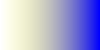

var g = ctx.createLinearGradient(0, 0, 100, 0);
g.addColorStop(0, 'rgba(255,255,0, 0)');
g.addColorStop(1, 'rgba(0,0,255, 1)');
ctx.fillStyle = g;
ctx.fillRect(0, 0, 100, 50);
| Unpremultiplied |  | midpoint: rgba(128, 128, 128, 0.5) |
| Premultiplied | midpoint: rgba(0, 0, 255, 0.5) | |
| 2D canvas | ||
| CSS |
|
|
| SVG |